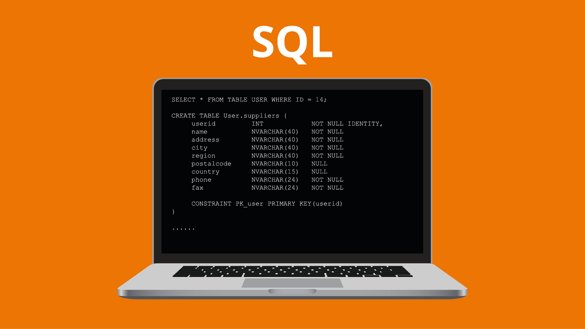

История языка SQL

SQL (Structured Query Language, или Язык структурированных запросов) был изначально разработан в начале 1970-х годов в компании IBM Дональдом Д. Чемберлином и Рэймондом Ф. Бойсом. Они работали над проектом System R, целью которого было создание системы управления базами данных, основанной на реляционной модели данных, предложенной Эдгаром Ф. Коддом в 1970 году.
Изначально SQL назывался SEQUEL (Structured English Query Language), но позже название было изменено на SQL из-за товарных знаков. В 1979 году компания Relational Software (ныне Oracle Corporation) выпустила первую коммерческую реализацию SQL для своей системы Oracle V2, которая стала одной из самых популярных реляционных СУБД.
Обзор языка SQL
SQL - это специализированный язык, используемый для программирования и управления данными в реляционных системах управления базами данных (СУБД). Основные функции SQL включают запрос данных, обновление данных и управление структурами базы данных.
- Язык определения данных (DDL)
- Язык манипулирования данными (DML)
- Язык управления данными (DCL)
- Создание базы данных
- Добавление данных в таблицы
- Эффективный запрос данных
| query_id | query | execution_time | rows_affected |
|---|---|---|---|
| 1 | SELECT * FROM users WHERE age > 30; | 0.003s | 150 |
| 2 | UPDATE products SET price = price * 1.1 WHERE category = 'Electronics'; | 0.015s | 500 |
| 3 | DELETE FROM orders WHERE order_date < '2023-01-01'; | 0.020s | 200 |
| Total Queries Executed | |||
Примеры кода на SQL
Ниже приведены примеры запросов на языке SQL:
-- Создание таблицы
CREATE TABLE Users (
ID INT PRIMARY KEY,
Name VARCHAR(100),
Age INT
);
-- Вставка данных в таблицу
INSERT INTO Users (ID, Name, Age)
VALUES (1, 'Алиса', 25);
-- Запрос данных
SELECT * FROM Users WHERE Age > 20;